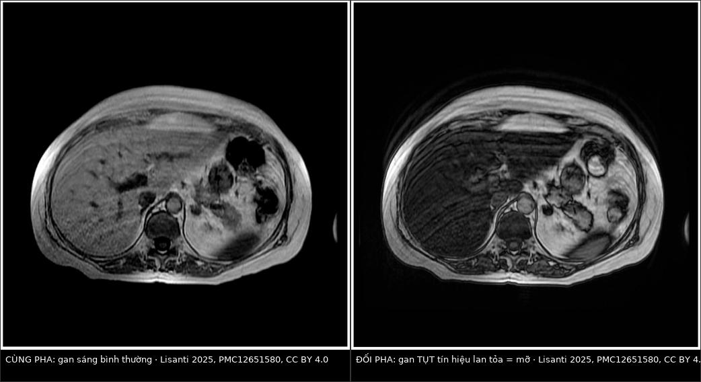
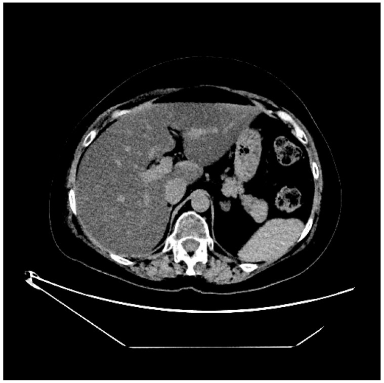

1732 — Tổn thương gan do thuốc ức chế CDK4/6 và ADC trastuzumab deruxtecan / Liver injury from CDK4/6 inhibitors and trastuzumab deruxtecan (T-DXd)
Tags: pattern:gan-lan-toa pattern:gan-nhieu-mo pattern:ton-thuong-gan-do-thuoc pattern:khong-o-khu-tru vung:gan protocol:CT-bung-khong-can-quang protocol:MRI-gan-in-out-phase protocol:MRI-gan-DWI score:RECIST-1.1 score:CTCAE
Mức chắc chắn (certainty): tổng hợp y văn (literature synthesis) — số liệu đọc trực tiếp từ toàn văn: ca DILI do T-DXd có MRI + mô bệnh (Curr Oncol 2025, PMC12651580, CC BY 4.0), đoàn hệ thực hành ribociclib (BMC Cancer 2025, PMC12661689), so sánh ribociclib–palbociclib (J Chin Med Assoc 2026, PMC13596929), loạt ca DILI do miễn dịch (Case Rep Oncol Med 2026, PMC13430969), tổng quan an toàn CDK4/6 (Biomolecules 2023, PMC10526227) và dược cảnh giác FAERS (Sci Rep 2025, PMC12328589).
1. Tổng quan bệnh học – cơ chế hình ảnh
- Bối cảnh: thuốc ức chế CDK4/6 (palbociclib, ribociclib, abemaciclib) và ADC kháng HER2 (T-DM1, trastuzumab deruxtecan — T-DXd) là nền điều trị của ung thư vú HR+/HER2− và HER2 thấp/dương. Cả hai nhóm đều gây tăng transaminase và tổn thương gan do thuốc (drug-induced liver injury, DILI); vấn đề thực hành không phải "có tăng enzym hay không" mà là tăng do thuốc hay do di căn gan tiến triển — vì một bên là giảm liều/ngừng thuốc, bên kia là đổi phác đồ.
- Cơ chế và vì sao hình ảnh là "lan tỏa" chứ không phải "khối":
- CDK4/6i ức chế phức hợp CDK4/6–cyclin D → ngừng chu kỳ ở G1. Cơ chế độc gan chưa rõ hoàn toàn, nhưng một phần là qua miễn dịch: loạt 5 ca DILI do ribociclib không lui sau khi ngừng thuốc nhưng đáp ứng corticoid, 3 ca tái tăng men khi giảm liều và 2 ca cần tacrolimus — tức tổn thương nhu mô lan tỏa, không tạo khối.
- T-DXd gồm kháng thể kháng HER2 gắn payload ức chế topoisomerase I (DXd) qua linker cắt được, có hiệu ứng bystander. Ca nguyên văn cho thấy mô bệnh là thoái hóa mỡ vi nang (microvesicular steatosis) + thoái hóa "đục" tế bào gan — kiểu tổn thương ty thể/ôxy hóa acid béo, làm triglycerid tích trong các nang nhỏ.
- TẠI SAO mỡ nội bào làm tín hiệu tụt trên MRI (vật lý): proton của nước và của nhóm −CH₂− của mỡ có tần số cộng hưởng lệch nhau; ở thời điểm đối pha (opposed-phase) hai tín hiệu triệt tiêu nhau, nên mô càng nhiều mỡ càng mất tín hiệu so với ảnh cùng pha (in-phase). Đây là lý do cặp ảnh in/out phase là phép thử rẻ nhất cho gan nhiễm mỡ lan tỏa, và cũng là lý do nó không bao giờ tạo "khối" — khác hoàn toàn với di căn.
- Ngưỡng định lượng của gan nhiễm mỡ (đã trình bày ở bài 125): CT không cản quang gan < 40 HU hoặc gan − lách ≥ 10 HU; MRI-PDFF ≥ 5% = nhiễm mỡ, ≥ 33% = mỡ nặng. Trên CT có cản quang không dùng ngưỡng HU tuyệt đối — phải so gan với lách cùng thì.
- Vì sao phân biệt được với di căn về mặt vật lý:
- Di căn là mô đặc tăng sinh mạch → khối khu trú, ngấm thuốc (thì động mạch/cửa), hạn chế khuếch tán (ADC thấp) do tăng mật độ tế bào, và co kéo vỏ gan khi xơ hóa.
- DILI/thoái hóa mỡ là thay đổi nội bào lan tỏa → không có bờ khối, không ngấm thuốc, không hạn chế khuếch tán, mật độ/tín hiệu thay đổi đều toàn gan (hoặc theo vùng tưới máu), và hồi phục khi ngừng thuốc.
- Dịch tễ – tần suất (số thực):
- Ribociclib, thực hành thật: 78/845 (9,2%) có độc gan; G1–2 69,2%, G3 24,4%, G4 6,4%; thời điểm khởi phát trung vị 13 tuần (IQR 7–27); 11,5% ngừng thuốc vĩnh viễn; không có ca tử vong; sống 1 năm 90% (G1–2) so với 76% (G3–4), p = 0,044.
- So sánh ribociclib với palbociclib (145 và 153 bệnh nhân): 28 và 19 ca độc gan ≥ G2; thời gian tới độc gan trung vị 42 ngày ở cả hai; sau hiệu chỉnh, palbociclib HR 0,467 (0,233–0,936), p = 0,032; di căn gan HR 2,159 (1,175–3,966), tiền sử HBV HR 2,216 (1,102–4,458), gan nhiễm mỡ HR 3,536 (1,840–6,794).
- Ribociclib gộp: độc gan mọi độ ~20%, G3–4 11–15%; MONALEESA-3: ALT G3/4 6,6% vs 1,9%, AST 4,8% vs 1,2% (so với placebo).
- Abemaciclib (MONARCH-3): ALT tăng 47,6% vs 25,2%, AST 36,7% vs 23,2% — chủ yếu độ 1–2, nhưng không được bỏ qua.
- T-DXd: trong DB-03, AST tăng 28% vs 41% và ALT 23% vs 32% (so với T-DM1) — tức không cao hơn T-DM1; nhưng theo dõi dược cảnh giác, T-DXd có tín hiệu độc gan ROR 2,51 (2,25–2,80), thời gian khởi phát trung vị 63 ngày (6–329), và có thể gây suy gan, vàng da; 33 báo cáo DILI trong 2020–Q3/2022, 60,6% từ Nhật Bản.
2. Mẫu hình + chẩn đoán phân biệt theo vị trí (Gamut)
- Khuôn 1 — Gan giảm đậm độ LAN TỎA, không khối, trên CT. Gamut: DILI/thoái hóa mỡ do thuốc (T-DXd, T-DM1, corticoid, hóa trị) vs gan nhiễm mỡ nền (béo phì, rượu, chuyển hóa) vs thoái hóa mỡ do suy dinh dưỡng vs viêm gan cấp (phù nhu mô). Chốt: gan − lách ≥ 10 HU và không có tổn thương khu trú.
- Khuôn 2 — Nhiều nốt giảm tỷ trọng MỚI, bờ không đều, ngấm viền. Gamut: di căn gan tiến triển vs áp-xe vs giả xơ gan (pseudocirrhosis) vs nốt tái tạo lành tính FNH-like (bài 1648). Chốt: ngấm viền + hạn chế khuếch tán + tăng kích thước theo RECIST.
- Khuôn 3 — Gan to, ứ dịch, ngấm thuốc loang lổ, không khối. Gamut: hội chứng tắc xoang gan (SOS/VOD) do oxaliplatin/hóa trị vs viêm gan do thuốc vs bệnh gan nền mất bù. Chốt: gan to + cổ trướng + tăng bilirubin (bài 1910).
- Khuôn 4 — Tăng enzym gan đơn thuần, hình ảnh gan BÌNH THƯỜNG. Gamut: DILI giai đoạn sớm vs viêm gan virus bùng phát vs viêm gan tự miễn vs tắc mật do hạch rốn gan. Chốt: không có tổn thương trên hình ảnh không loại trừ DILI; phải xét nghiệm virus/tự miễn.
- Khuôn 5 — Vàng da + giãn đường mật trong gan. Gamut: di căn hạch rốn gan gây tắc vs DILI thể ứ mật vs sỏi/viêm đường mật. Chốt: giãn đường mật là do tắc, không phải DILI đơn thuần.
- Gợi nhớ "DILI": Di căn phải loại trước · In/out phase cho mỡ · Liver enzymes theo CTCAE · Immune-mediated nếu không lui khi ngừng thuốc.
3. Bảng so sánh phân biệt (ma trận đối chiếu)
| Thực thể (entity) | Hình ảnh điển hình (CT / MRI / DWI) | Chốt vào (rule-in) | Chốt loại (rule-out) | Gợi ý xác nhận |
|---|---|---|---|---|
| DILI — thoái hóa mỡ (T-DXd, T-DM1, corticoid) | CT: gan giảm đậm độ lan tỏa, gan − lách ≥ 10 HU (không cản quang); MRI: tụt tín hiệu đối pha so với cùng pha, không khối, không hạn chế khuếch tán, không ngấm | Giảm đậm độ/tín hiệu LAN TỎA + enzym gan tăng sau thuốc + hồi phục khi ngừng | Có khối ngấm thuốc hoặc hạn chế khuếch tán → không phải DILI đơn thuần | MRI in/out phase + PDFF; ngừng thuốc theo dõi 2–4 tuần |
| Tiến triển di căn gan | Nốt/khối mới, giảm tỷ trọng, ngấm viền, có thể hoại tử trung tâm; DWI hạn chế khuếch tán (ADC thấp) | Tổn thương MỚI + tăng ≥ 20% và ≥ 5 mm theo RECIST 1.1 | Không có tổn thương khu trú, chỉ thay đổi lan tỏa → không phải tiến triển | So ảnh cũ cùng thì + RECIST; PET/CT nếu còn nghi |
| Giả xơ gan (pseudocirrhosis) | Co kéo vỏ gan, teo thùy, nhiều nốt bờ gan, có thể cổ trướng; thường sau hóa trị lâu | Biến dạng vỏ + teo nhu mô + nốt bờ gan ở bệnh nhân đáp ứng điều trị | Gan to, bờ nhẵn, không co kéo → không phải giả xơ | CT/MRI + đối chiếu diễn tiến (bài 1648) |
| SOS / bệnh tắc xoang gan | Gan to, ngấm thuốc loang lổ kiểu "pho mát", ứ dịch quanh gan, cổ trướng, tĩnh mạch cửa giảm ngấm | Tam chứng gan to + tăng cân/ứ dịch + tăng bilirubin sau hóa trị | Không ứ dịch, không gan to, bilirubin bình thường → ít nghĩ SOS | Doppler tĩnh mạch cửa + MRI (bài 1910) |
| Nốt tái tạo FNH-like sau hóa trị | Nốt ngấm mạnh thì động mạch, đồng tín hiệu thì gan mật, không thải thuốc; thường nhiều nốt nhỏ | Ngấm thì động mạch + không washout + không hạn chế khuếch tán | Washout + hạn chế khuếch tán → nghĩ di căn/HCC | MRI gan mật (bài 1648) |
| Viêm gan virus bùng phát / tự miễn | Hình ảnh thường bình thường hoặc phù nhu mô lan tỏa; không khối | HBV DNA/ACTH/AMA dương, men gan tăng sau khi giảm miễn dịch | Có khối hoặc giãn đường mật → không giải thích hết bằng viêm gan | Xét nghiệm virus + tự miễn (trước khi kết luận DILI) |
| Tắc mật do hạch rốn gan | Giãn đường mật trong gan, hạch rốn gan, thành ống mật dày | Giãn đường mật + hạch/khối rốn gan | Không giãn đường mật → không phải tắc mật | MRCP/CT thì muộn |
| Áp-xe gan | Ổ dịch hóa lỏng, ngấm viền, có thể khí trong ổ, sốt cao | Ổ dịch + viền ngấm + khí + sốt | Không ổ dịch, không khí, không viền → không phải áp-xe | Siêu âm/CT + cấy; dẫn lưu khi > 5 cm |

Bên trái: ảnh cùng pha (in-phase) — gan sáng bình thường. Bên phải: ảnh đối pha (out-of-phase) — gan tụt tín hiệu lan tỏa, không có khối, không có bờ tổn thương: mỡ nội bào lan tỏa. Đây là ca nữ 49 tuổi, HER2 dương, sau 2 chu kỳ T-DXd tăng G3 AST/ALT kéo dài. Nguồn: Lisanti C và cs., Curr Oncol 2025, Fig. 1–2 (CC BY 4.0).Ba dấu hiệu quyết định "thuốc hay di căn"
- Không có bờ: DILI/thoái hóa mỡ không có ranh giới; mọi tổn thương có bờ rõ phải được coi là khối cho đến khi loại trừ.
- Không hạn chế khuếch tán: mỡ và phù không làm ADC tụt như mô tế bào đặc; ADC thấp khu trú là dấu của di căn/áp-xe.
- Diễn tiến theo thời gian: ngừng thuốc → men gan và tín hiệu gan hồi phục trong vài tuần đến 3 tháng (ca nguyên văn: về G1 sau ~3 tháng); di căn thì không hồi phục mà tăng kích thước.
4. Protocol chụp + phân độ CTCAE + ngưỡng xử trí
Theo dõi trước và trong điều trị (bắt buộc):
- Baseline: AST, ALT, ALP, bilirubin, albumin, đông máu + HBV/HCV; siêu âm hoặc CT gan để có mốc so sánh (đặc biệt nếu có di căn gan, gan nhiễm mỡ, HBV — ba yếu tố làm tăng nguy cơ).
- Trong 6 tháng đầu: men gan trước mỗi chu kỳ và sớm hơn nếu có triệu chứng; dữ liệu thực hành cho thấy khởi phát trung vị 42 ngày (ribociclib/palbociclib) và 13 tuần (ribociclib), nên 2–3 tháng đầu là cửa sổ nguy cơ cao nhất.
- T-DXd: theo dõi trước mỗi chu kỳ; thời gian khởi phát DILI trong FAERS trung vị 63 ngày, nhưng khoảng 6–329 ngày — tức không được dừng theo dõi sau 3 tháng.
Phân độ CTCAE v5.0 (dùng để quyết định):
| Độ | ALT/AST | Xử trí thực hành (theo dữ liệu đoàn hệ) |
|---|---|---|
| G1 | > ULN – 3,0 × ULN | Tiếp tục thuốc, theo dõi sát mỗi 1–2 tuần |
| G2 | > 3,0 – 5,0 × ULN | Tiếp tục hoặc giảm liều; loại trừ virus/tự miễn/thuốc khác; chụp gan nếu chưa có |
| G3 | > 5,0 – 20,0 × ULN | Tạm ngừng, chụp gan, cân nhắc sinh thiết; trong đoàn hệ: 12 ca giảm liều, 5 ca ngừng (ribociclib) |
| G4 | > 20,0 × ULN | Ngừng thuốc (5/5 ca G4 ngừng trong đoàn hệ; 1 ca thử lại thành công) |
- Định nghĩa DILI/Hy's law: ALT > 5 × ULN, hoặc ALP > 2 × ULN, hoặc ALT > 3 × ULN kèm bilirubin > 2 × ULN, khởi phát trong 90 ngày dùng thuốc và lui trong 1 tháng sau ngừng. Hy's law dương là dấu tiên lượng nặng, không phải tiêu chuẩn duy nhất.
- Không có ngưỡng thống nhất giữa các phác đồ cho CDK4/6i và T-DXd — mỗi thử nghiệm/label có bảng giảm liều riêng; vì vậy đối chiếu label của thuốc đang dùng trước khi quyết định, và ghi rõ độ CTCAE + ngày trong hồ sơ.
Khi enzym gan tăng không giải thích (workup hình ảnh):
- Siêu âm bụng (rẻ, loại trừ giãn đường mật, ổ dịch, huyết khối tĩnh mạch cửa).
- MRI gan có cản quang từ — tối thiểu: T1 in/out phase, T2 fat-sat, DWI/ADC, động học sau tiêm (động mạch–cửa–muộn), ± thì gan mật (EOB) nếu nghi nốt tái tạo/FNH-like. Đây là bộ duy nhất trả lời cùng lúc "có mỡ không?" và "có khối mới không?".
- CT bụng có cản quang nếu MRI không thuận lợi — nhưng không dùng ngưỡng HU tuyệt đối để chẩn đoán mỡ khi đã tiêm thuốc.
- Sinh thiết gan khi: hình ảnh không kết luận, men gan tăng kéo dài dù đã ngừng thuốc, hoặc kết quả sẽ đổi phác đồ. Ca nguyên văn được sinh thiết vì men gan G3 kéo dài, không đáp ứng corticoid, và mô bệnh là thoái hóa mỡ vi nang + thoái hóa đục.
- Theo dõi tiến triển: dùng RECIST 1.1 — tiến triển = tổng đường kính đích tăng ≥ 20% VÀ ≥ 5 mm so với nadir, hoặc tổn thương mới.
flowchart TD
A[Tang AST/ALT khi dung CDK4/6i hoac T-DXd] --> B[Lap lai men gan, bilirubin, dong mau, HBV/HCV]
B --> C{Muc do CTCAE?}
C -->|G1-G2| D[Tiep tuc/giam lieu, theo doi 1-2 tuan]
C -->|G3-G4| E[Tam ngung thuoc]
E --> F[Sieu am bung]
F --> G{MRI gan: in/out phase + DWI + dong hoc}
G -->|Mo lan toa, khong khoi| H[DILI: ngung thuoc, theo doi hoi phuc]
G -->|Khoi moi/ngam vien| I[Di can tien trien: danh gia RECIST, doi phac do]
G -->|Khong ket luan| J[Sinh thiet gan]
H --> K{Men gan khong lui sau 2-4 tuan?}
K -->|Co| L[Nghi DILI qua mien dich: corticoid, thuoc uc mien dich]
K -->|Khong| M[Giam lieu/tiep tuc theo label]
5. Biến thể bình thường và cạm bẫy
- Gan nhiễm mỡ nền từ trước (béo phì, chuyển hóa, rượu) làm HR 3,536 cho độc gan — không được dùng "đã có mỡ từ trước" để miễn trừ khi men gan tăng; phải so ảnh cũ để biết mỡ mới hay cũ.
- Di căn gan có từ trước làm HR 2,159; gan có di căn dễ bị DILI hơn và khó đọc hơn — cần so sánh từng tổn thương với ảnh nền, không chỉ đọc "gan có nốt".
- Cạm bẫy 1 — quy mọi tăng men gan cho "tiến triển": nếu không có tổn thương mới và men gan tăng sau 2 chu kỳ thuốc, DILI là giả thuyết hàng đầu; đổi phác đồ sớm có thể bỏ mất thuốc còn hiệu quả.
- Cạm bẫy 2 — quy mọi tăng men gan cho "thuốc": di căn gan tiến triển và tắc mật do hạch cũng tăng men gan; không chụp gan là bỏ sót nguyên nhân chữa được (stent, đổi phác đồ).
- Cạm bẫy 3 — bilirubin bình thường tưởng là nhẹ: ca nguyên văn có G3 AST/ALT nhưng bilirubin bình thường và đông máu bình thường — tổn thương vẫn đủ nặng để ngừng thuốc vĩnh viễn. Ngược lại, Hy's law dương (ALT > 3 × ULN + bilirubin > 2 × ULN) là dấu nặng, phải xử lý như cấp cứu.
- Cạm bẫy 4 — "hết thuốc là hết độc": DILI do ribociclib có thể qua miễn dịch và không lui khi ngừng thuốc; loạt 5 ca cần corticoid, 3 ca tái tăng khi giảm liều, 2 ca cần tacrolimus, và 3 ca chuyển sang palbociclib an toàn > 2 năm — đây là lựa chọn thay thế trong cùng nhóm thuốc.
- Cạm bẫy 5 — nhiễu do thuốc trước đó: bệnh nhân đã dùng T-DM1 ± atezolizumab (như ca nguyên văn, từng tăng bilirubin G2 + gan nhiễm mỡ) hoặc corticoid liều cao — thuốc cũ và corticoid đều gây mỡ gan, nên "gan nhiễm mỡ" trên MRI không tự động là do T-DXd.
- Cạm bẫy 6 — sinh thiết mù trong gan không đồng nhất: mảnh sinh thiết nhỏ có thể bỏ sót ổ di căn hoặc bỏ sót ổ DILI; nên lấy nhiều mảnh dưới hướng siêu âm, và luôn đối chiếu ảnh.
6. Tự lượng giá — Blind Quiz
Ca 1 — Nữ 49 tuổi, ung thư vú HER2 dương, sau 2 chu kỳ T-DXd: AST/ALT độ 3 kéo dài, bilirubin bình thường.

- Gợi ý: không đau bụng, không vàng da; trước đó đã dùng T-DM1 và corticoid.
- Câu hỏi: (1) So sánh đậm độ gan với lách? (2) Có tổn thương khu trú nào không? (3) Ba chẩn đoán phân biệt và bước tiếp theo?
Bấm để hiện đáp án (findings + chẩn đoán)
- Dấu hiệu: gan giảm đậm độ lan tỏa, tối hơn lách, không thấy ổ khu trú, không giãn đường mật, không dịch tự do.
- Chẩn đoán: gan nhiễm mỡ lan tỏa do thuốc (DILI) — MRI xác nhận tụt tín hiệu đối pha, sinh thiết: thoái hóa mỡ vi nang + thoái hóa đục tế bào gan; ngừng T-DXd, men gan về G1 sau ~3 tháng.
- Phân biệt: di căn gan (sẽ có nốt ngấm viền), viêm gan virus/tự miễn (hình ảnh thường bình thường, cần xét nghiệm), tắc mật (sẽ giãn đường mật).
- Vì sao: mỡ nội bào giảm suy giảm tia X → gan tối hơn lách; tổn thương nội bào lan tỏa nên không tạo khối.
- Nguồn ảnh: Lisanti C và cs., Curr Oncol 2025, Fig. 5 (CC BY 4.0).
Ca 2 — Cùng bệnh nhân: hai ảnh MRI gan ở hai chuỗi xung khác nhau.
- Gợi ý: cùng mặt cắt, cùng thời điểm; chỉ khác thời điểm lấy tín hiệu.
- Câu hỏi: (1) Ảnh nào là cùng pha, ảnh nào là đối pha? (2) Vì sao gan tối đi? (3) Nếu thay bằng khối di căn, hai ảnh này sẽ khác thế nào?
Bấm để hiện đáp án (findings + chẩn đoán)
- Trả lời: trái = cùng pha (gan sáng), phải = đối pha (gan tụt tín hiệu lan tỏa). Tín hiệu tụt đồng đều toàn gan, không có bờ.
- Vì sao: proton mỡ và nước lệch tần số; ở đối pha hai tín hiệu triệt tiêu, mức mất tín hiệu tỷ lệ lượng mỡ.
- Nếu là di căn: sẽ thấy ổ khu trú mất tín hiệu/ngấm thuốc, bờ rõ, hạn chế khuếch tán, và không đối xứng toàn gan; cặp in/out phase không dùng để chẩn đoán khối mà để phát hiện mỡ.
- Cạm bẫy: mỡ không đều (do thuốc, do tưới máu) có thể tạo vùng giả tổn thương — luôn đọc kèm T2, DWI và ảnh sau tiêm.
- Nguồn ảnh: Lisanti C và cs., Curr Oncol 2025, Fig. 1–2 (CC BY 4.0); ảnh ghép letterbox.
Bài liên quan chéo
- 1648 — Di căn gan ở ung thư vú (phân biệt di căn, u máu, mỡ do điều trị, giả xơ)
- 125 — Gan nhiễm mỡ, xơ gan & tăng áp cửa (ngưỡng HU, PDFF)
- 516 — Hình ảnh vú sau điều trị
- 154 — RCC di căn và theo dõi sau cắt thận (RECIST 1.1)
- 500 — Tổng quan Vú & Sản phụ khoa
Không dùng để chẩn đoán độc lập khi chưa có người hướng dẫn.